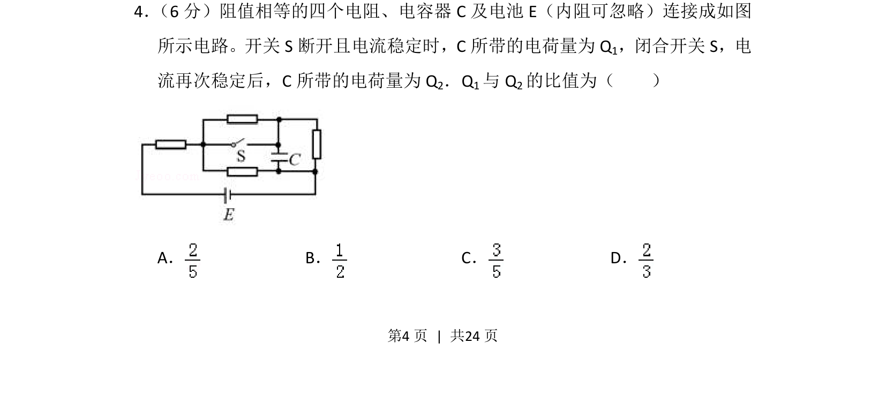
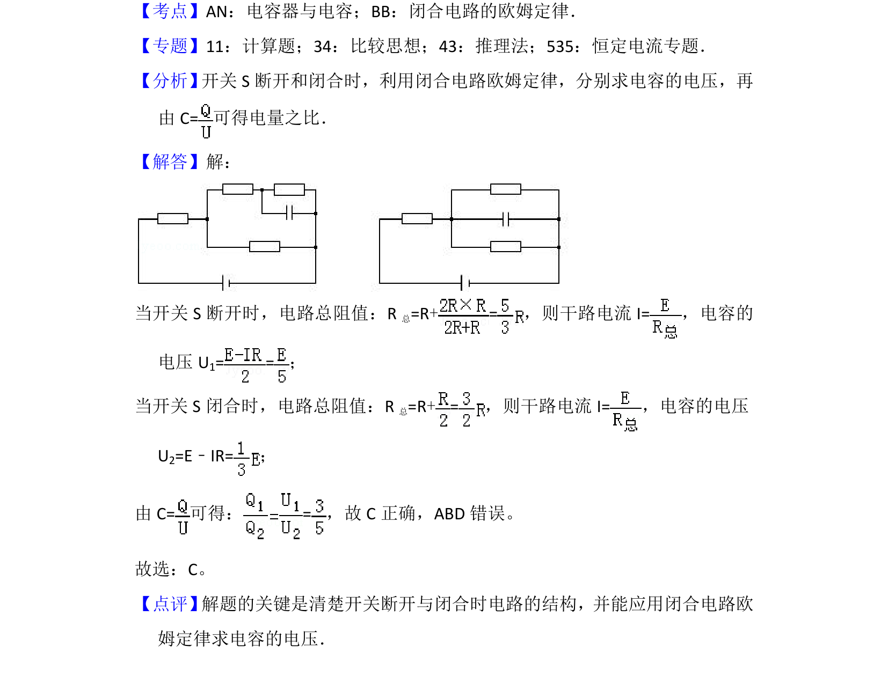

2016-新课标Ⅱ-04
考点：含容电路分析 电阻串并联 电容器电压 电容定义式
题面


摘要
四个等值电阻与电容器、电池组成的电路，通过开关通断改变电路结构，求电容器所带电荷量之比。
关联考点
答案与解析

📄 原 PDF 第 4 页：
素材/真题/吉林/2008-2024·（吉林）物理高考真题/2016年高考物理试卷（新课标Ⅱ）（解析卷）.pdf
题干文本
4． （6分）阻值相等的四个电阻、电容器C及电池E（内阻可忽略）连接成如图 所示电路。开关S断开且电流稳定时，C所带的电荷量为Q 1，闭合开关S，电 流再次稳定后，C所带的电荷量为Q 2．Q1与Q 2的比值为（ ） A．B．C．D．